Leiden and surroundings · church baptisms 1600–1810
Trots op Zeeland: the lightning now only strikes the 100 families whose parents married with a bride or groom born in Zeeland.
Two centuries of baptism registers from the Leiden region, linked into families by matching the names of the parents. Families light up one by one; hover over the sky to strike one yourself.
Left to right is time; height has no meaning. Each family gets a random height, so its children sit on one line and the threads arch between them; the longer the gap between two children, the higher the arch. The lightning only draws attention: its shape and height mean nothing. When a family lights up, its panel shows the children on their own timeline and, where we found it, the marriage of the parents (linked by matching the parents to bride and groom in the marriage registers). Links were made with burgerLinker in four runs (family name or patronym, given names as written or standardised), and a patronym-only link is dropped when the two families have different family names.
Brides and grooms born in Zeeland · Leiden marriage registers 1575–1810
Between 1575 and 1810, more than a thousand people born in Zeeland married in Leiden. We followed their marriages to the baptisms of their children, and from there to the families we reconstructed.
Birthplaces come from the Leiden marriage registers (DTB Leiden), matched to IISG toponyms; a bride or groom counts when the toponym lies in the province of Zeeland. Children were linked with burgerLinker by matching the parents of a baptism to bride and groom, with standardised given names and family name or patronym. Places sit at approximate coordinates; no coastline is drawn. Many marriages have no linked children: some are older than the baptism registers, and some couples will have baptised their children elsewhere.